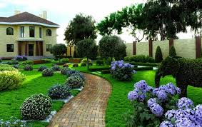

Особливості
Поєднання краси та функціональності є головною метою дизайнера. Фахівцю потрібно максимально підкреслити привабливість земельної ділянки, акцентувати увагу на вишуканості рослин і дерев. Разом з тим це повинна бути територія, зручна для щоденного використання. Всі житлові та господарські об’єкти мають бути виконані в єдиному стилі оформлення. Ландшафтний дизайн квітників передбачає підбір рослин за групами та висадження їх по певній схемі, а також – врахування кліматичних особливостей території. Озеленення прибудинкової ділянки включає в себе оформлення клумб та газонів, галявин та штучних водойм, доріжок і фонтанів. Від уважного ока фахівця не сховається жоден куточок території, адже з кожної видової точки повинен відкриватися бездоганний вигляд.В останні роки все більшої актуальності набуває облаштування садових грядок. Певною мірою це ностальгія за дачами та сільськими городами, але – у сучасній інтерпретації. Власники такого городу мають змогу не тільки вирощувати екологічно чисту рослинну продукцію. Вони будуть щоденно насолоджуватися неперевершеним виглядом «елітних» грядок та, безперечно, оцінять їх зручність і функціональність.

Стилі ландшафтного дизайну
- Класичний – стиль Версалю та Петергофу, який виділяється присутністю головної осі симетрії. Тут все підкорене та точності. Характерні елементи: стрижені «зелені огорожі», різноманіття топіарних форм, прямі доріжки.
- Кантрі – використання національних мотивів, створення атмосфери сільського колориту. Характерні елементи: посів невибагливих трав, довільне розміщення декоративних рослин та садових аксесуарів. Присутність виробів з глини та натурального каменю, дерев’яних огорож.
- Китайський – вирізняється поєднанням простоти та глибокого символізму. Японський та китайський – це стилі ландшафтного дизайну Сходу. Традиційні ознаки: обов’язкова присутність джерела води (водойма, фонтан, струмок). Використання натурального каменю, особливо – штучних гірок без будь-яких рослин. Кожне дерево є уособленням життєвих понять: любові, щастя, добробуту та інших.
- Модерн – характеризується максимальним комфортом та функціональністю. Тут мають бути і зона для прийому їжі, і басейн, і спортивний майданчик. Використовуються надійні та зносостійкі матеріали для ландшафтного дизайну, вдало поєднуються традиції Сходу та Заходу. Характерні ознаки: мінімалізм, плавність ліній, обмежений вибір рослин, лаконічність садових аксесуарів, велика кількість відкритих просторів.
- Пейзажний – ландшафтний дизайн імітує незайману природу, де не ступала нога людини. Традиційні ознаки: плавна форма доріжок та газонів, мінімальна обрізка дерев і кущів, відсутність вимог до форми клумб та газонів, водойми природної форми. Відомі приклади в Україні – парки Олександрія та Софіївка.
- Хай-тек – відносно новий напрям, для якого притаманна виразність ліній та використання сучасних матеріалів. Серед найбільш популярних: бетон, пластик, скло, залізо, дзеркальні поверхні. Доріжки облаштовують прямі або зигзагоподібні, для озеленення вибирають дерева з чіткою геометрією крони (тую, ялівець). Затребувані зелені стрижені огорожі з самшиту, грабу та туї. Квітники – переважно монохромні.
Підготовчі роботи та художнє проектування
Основним завданням є збір важливих даних для створення майбутнього проекту. До них належать: схема проходження інженерних мереж, склад ґрунту, геологічні умови, наявність підземних споруд та інше. Наступний етап – це підбір зелених насаджень, елементів освітлення та малих архітектурних форм. Даний вид роботи виконують з використанням сучасного програмного забезпечення. Схематичне зображення території містить всі майбутні об’єкти, при бажанні їх можна легко перемістити. Значна увага приділяється створенню гармонійного простору, з відповідним художнім оформленням.